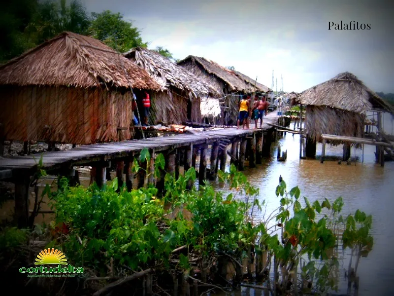
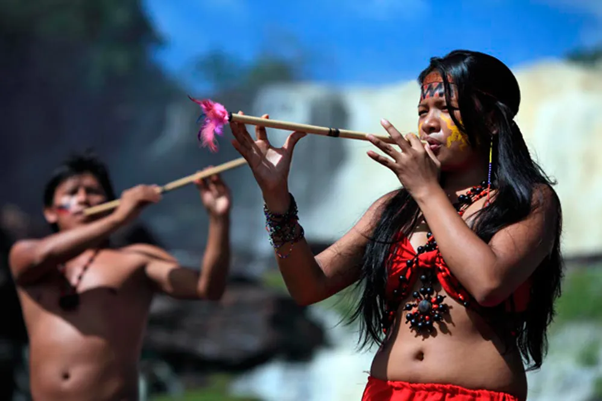
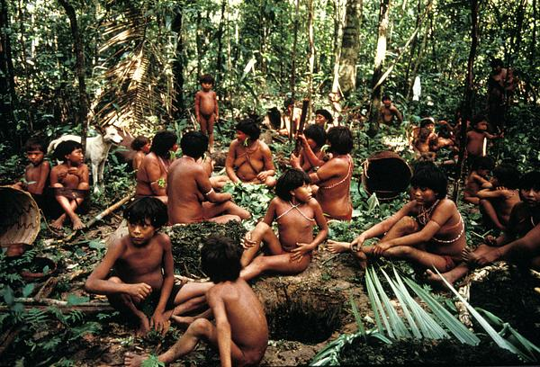

Contexto Histórico
Las tierras al sur del río Orinoco y la inmensa red fluvial de su desembocadura albergaron a algunas de las culturas más antiguas y resistentes del continente, caracterizadas por una profunda simbiosis mística y ecológica con la selva tropical y los cuerpos de agua.
Los Warao (Delta Amacuro): Conocidos como "la gente del agua", dominaron los caños del delta del Orinoco. Desarrollaron una sorprendente cultura semi-nómada adaptada a los palafitos, basando su subsistencia y cosmogonía en la recolección, la pesca y los múltiples usos de la palma de moriche.
Los Pemón (Bolívar): Habitantes ancestrales de la Gran Sabana. Estructuraron su sociedad en comunidades agrícolas itinerantes basadas en el conuco y desarrollaron un rico universo mítico íntimamente ligado a la presencia imponente de los tepuyes.
Los Yanomami y Piaroa (Amazonas): Los Yanomami mantuvieron un aislamiento milenario en lo profundo de la selva mediante complejos sistemas de aldeas comunales (shabonos). Por su parte, los Piaroa (Wothuha) destacaron por su vasto conocimiento botánico y chamánico, autodenominándose protectores del equilibrio ecológico de la selva.
Imágenes


